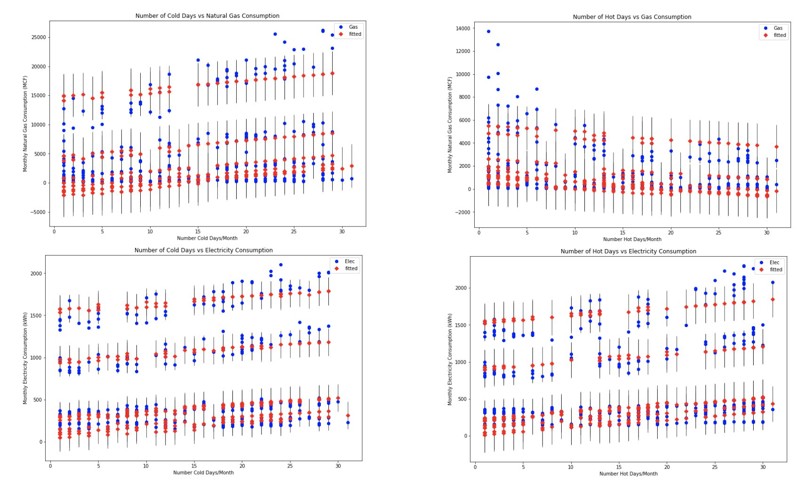
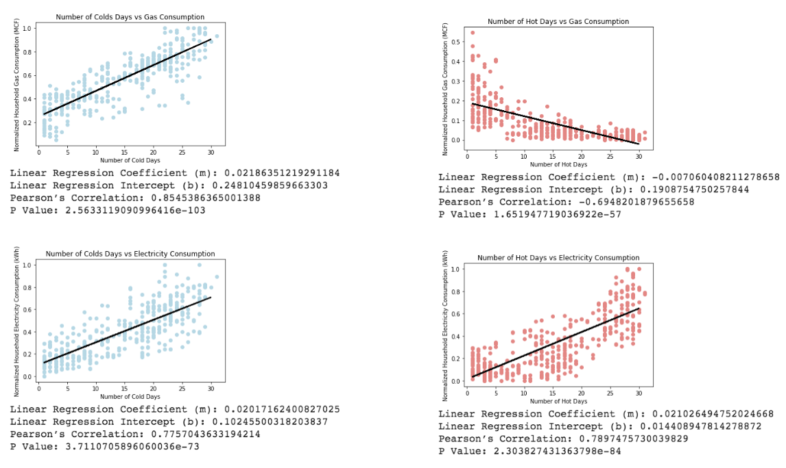

The month with the most cold/hot days is the month with the highest (a) residential natural gas consumption and (b) residential electricity consumption. Link to full code for data manipulation and statistical analysis
Originally, our data consisted of daily minimum/maximum temperatures for all 6 states of New England over a 10 year time period. We decided to define what a "cold" or "hot" day is by state using the following approach:
Then, for every state, we summed up the number of hot and cold days in every month of the 10 year period. We used two different techniques for our statistical analysis: Multiple Linear Regression and Normalized Simple Linear Regression.
For both of these regression types, the idea was to model the linear relationship between:
For each technique, we had to restructure our data further.
This is a link to our data before any restructuring for statistical analysis:
For our MLR analysis, we decided to add the following dummy variables to our data: a variable for each state and a variable for each season. For example, if a datapoint was representing the number of hot days in RI in January 2010, the "RI" and "Winter" dummy variables would take on a value of 1 whereas all the other states and seasons would take on a value of 0. The reason for doing this was to offset the discrepancies between different states, such as population size. For example, in January 2010, RI had 28 cold days and MA had 29 cold days. Gas consumption in RI that month was 3138 MCF whereas in MA, it was 23,141 MCF. This is probably because MA has a larger population size than RI, therefore consumes for gas. When modeling the relationship between the number of monthly hot days and monthly natural gas or electricity consumption, we decided to exclude datapoints which had zero hot days. Similarly, when modeling the relationship between the number of monthly cold days and monthly natural gas or electricity consumption, we excluded datapoints which had zero cold days. We thought this would be appropriate since we are anyways plotting the number of hot days/month and cold days/month on separate regressions. For example, if a month (e.g. January) has zero hot days, it probably has many cold days. Therefore, that datapoint should only be used in the regressions where the independent variable is number of cold days/month. This is a link to our data after adding dummy variables for MLR
For our simple regression model, we were only working with one independent variable at a time - either number of monthly hot days or number of monthly cold days - and therefore did not have any dummy variables. However, we decided to normalize our dependent variables: monthly natural gas/electricity consumption. For each state, we normalized the state's monthly natural gas/electricity consumption by using a min-max normalization function. Once again, we decided to exclude data points where the independent variable had a value of zero i.e. x=0 for the same reason mentioned above. This is a link to our data after normalizing our dependent variables
For MLR, we decided to plot our results on scatter plots of observed values compared to fitted values. We chose this graph type in order to easily observe trends and anomolies in our data.

This is a link to the four OLS Regression Summaries
For the normalized simple regression, we decided to plot our results on scatter plots with a line of best fit to represent the correlation between the two variables. Underneath each graph, we put the coefficient (or slope) of the line,
the intercept, Pearson's correlation coefficient, and the p-value.

1. Multiple Linear Regression:
To measure the success of our MLR, we decided to look at the OLS Regression Summaries for each of the four graphs (linked above).
We specifically focused on the coefficient of the independent variable (either number of hot days or cold days per month), the r-squared value and the p-value.
A p-value less than 0.05 is said to be statistically significant. R-squared is a measure of how well the model fits the data. The higher the r-squared, the smaller the difference between the observed data and the fitted values.
2. Normalized Simple Linear Regression:
To measure the success of our simple regressions, we decided to look at the regression coefficient (slope), intercept, Pearson's correlation coefficient and p-value.
A p-value less than 0.05 is said to be statistically significant and a correlation coefficient that lies between ± 0.50 and ± 1 represents a strong correlation.
We partially accept our hypothesis. We accept that the month with the most hot/cold days is the month with the highest electricity consumption.
Moreover, we accept that the month with the most cold days is the month with the highest natural gas consumption. However, we reject that
the month with the most hot days is the month with the highest natural gas consumption. This is because we observed an inverse relationship between
the number of hot days per month and monthly natural gas consumption.
Moving forward, we plan to further interpret the coffecients of our dummy variables in MLR. For our final poster, we plan to include the graphs above and samples of our data tables to show how data was collected and manipulated.